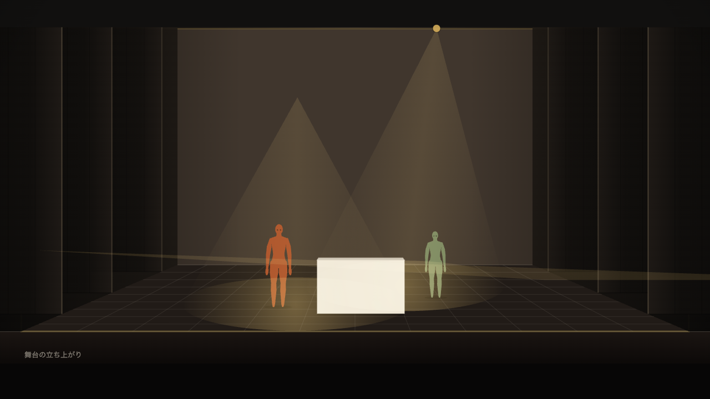
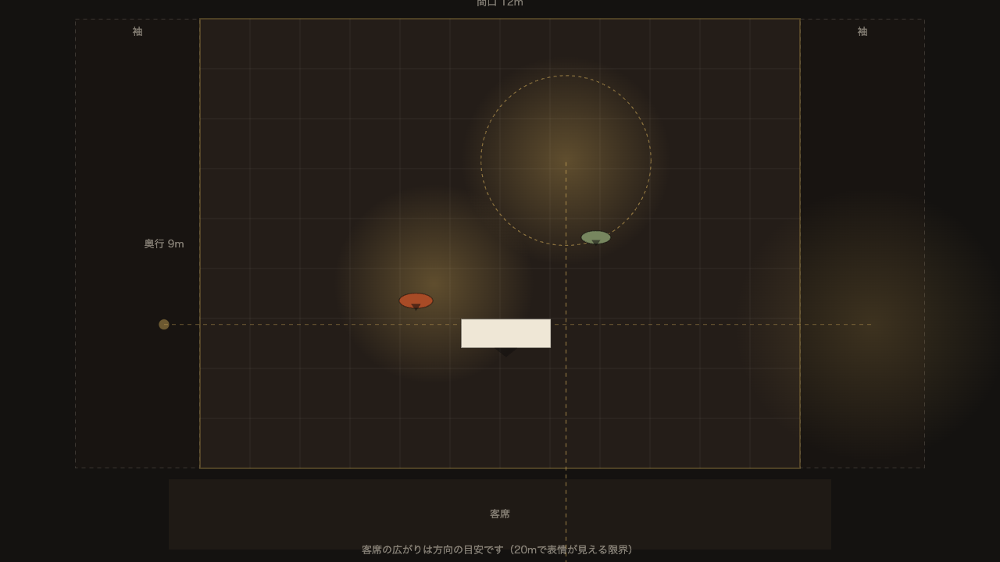
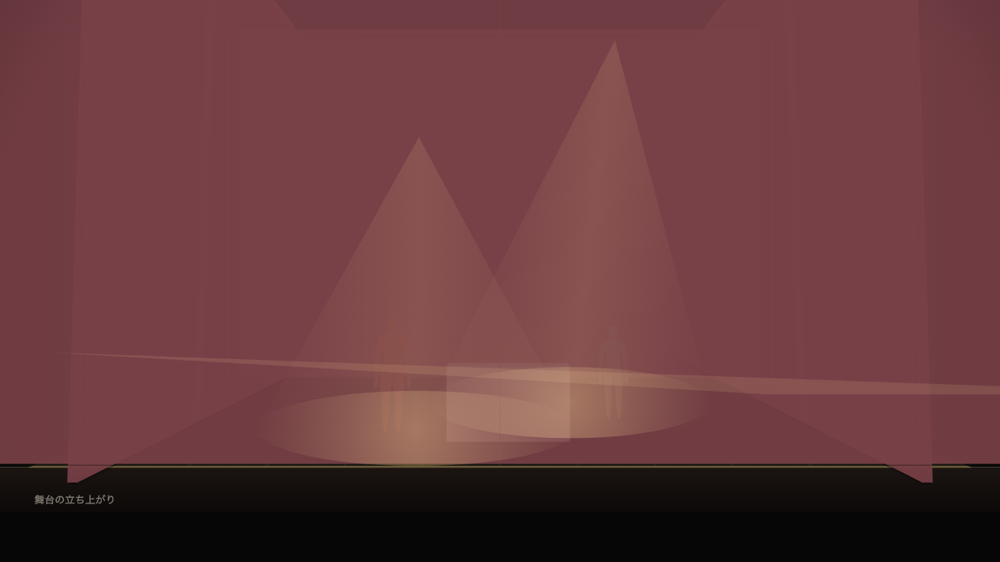

STAGE SKETCH — β
舞台スケッチ
開演前のご案内 — 90秒でわかる、はじめての手引き
招かれた方のための、8つの場
2026-08
SCENE 01
これは何
客席からと、真上から。二枚で一つの舞台。
正面と平面は同じ舞台——片方を動かせば、もう片方も動きます。

SCENE 02
入り口
ENTRANCE
招待状は、名前とパスワード。
一招待メッセージのURLをブラウザで開く
二お渡しした名前とパスワードで入る
三舞台が現れます。あとは触るだけ
PC描く机道具が全部そろう本館。描く作業はここで。
iPad持ち歩く画板Safariの共有ボタンから〈ホーム画面に追加〉。稽古場でも開ける。
スマホ見る係シーンを送って眺める。読み込みと控えの書き出しも。
SCENE 03
最初の10分
FIRST RUN
最初の先生は、
アプリの中にいます。
はじめて開くと、9段の短い案内がはじまります。読むだけではなく、手を動かすうちに——
動かす→足す→構える→動線→次の場→転換→明かり→メモ→書き出す
終わる頃には、一場面できあがっています。
もう一度見たいときは 〈設定〉→〈使い方〉。
SCENE 04
描けるもの
ON STAGE
明かりも、幕も、盆も。

- 照明吊り・SS・前明かり・転がしの4種
- 姿勢30種——宙返り、シルホイール、一輪車
- 機構盆・せり・幕・水面PCのみ
- 劇場額縁からテントまで。実在の「シアタートラム」も
SCENE 05
一緒に見る
SHARED SESSION
同じ舞台を、
離れた場所から。
招待URLで入ると、ホストと同じ場面が手元に映ります。レーザーポインタと矢印で「ここ」を指せます。
打ち合わせはZoom越しにどうぞ。場面はホストが送り、あなたは指す係です。
SCENE 06
たいせつな約束
ONE PROMISE
描いたものは、
あなたの端末の中に。
クラウドには送られません。だから——区切りのいいところで〈書き出す〉を押して、控えを一枚。お願いはこれだけです。
ブラウザのデータ削除で消えます。控えのファイルがあれば、いつでも戻せます。
SCENE 07
幕間の案内所
INTERMISSION
困ったら、三つの窓口。
使い方をさがす〈設定〉から。言葉を入れると、その場で答えが出ます。
使いかたの冊子深く知りたくなったら。全10章の読み物です。
感想を送るひとことで十分。「ここで迷った」が一番の贈り物です。
それでは——開演です。